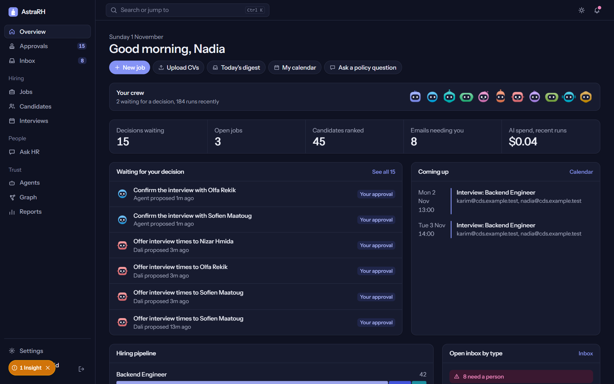
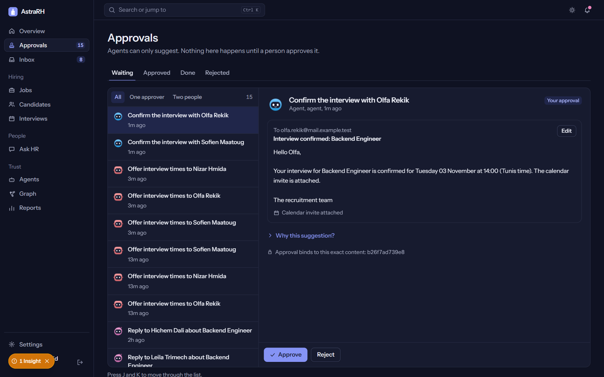

01 / RECRUITMENT
Read, rank, explain.
CVs parsed with identity removed. A deterministic rubric ranks. Every score opens into its evidence.
42 CVs in one demo run
Yasmine pressed send.
Four years of backend experience. One application. No human on the other side.
The time a recruiter gives her CV before deciding whether she exists.
“The company didn’t reject Yasmine. The system never met her.”
One trust layer. Every HR service. Nothing leaves without a human.
Hiring, people, inbox, policy answers, onboarding and payroll. One place to see what the agents did and what needs a human.
The dashboard is not a report. It is the queue of human decisions.

Her email and CV land in the same inbox as every other message.
The CV is parsed, the evidence is quoted, and the ranking has a reason.
The recruiter approves the shortlist and the interview. Nothing is sent before that.
A plan, a buddy, check-ins, a skill gap, training — and a manager who can see the evidence.

Three services, one candidate file. The recruiter sees evidence, not a black box.
CVs parsed with identity removed. A deterministic rubric ranks. Every score opens into its evidence.
Every email classified by type and urgency. Legal, salary, visa and health questions go to a person.
Policy questions get cited answers. If the documents don’t cover it, the question becomes an HR ticket.
The same person, the same data, the same approval ledger — from offer letter to payroll.
30/60/90 plan, buddy, check-ins, support flags. Skill gaps become training, not guesswork.
Engagements, payroll inputs, gross-to-net, deterministic payslips, replay and approval.
Leave, shifts, coverage and confidential cases — designed, not yet merged into this release.
Process boundaries are security controls — not microservice theatre.
Designed for Annex III controls. Not “AI Act compliant.” The difference matters.
Mid-market, 200–2,000 employees. Tunisia and France first. High-volume hiring, a small HR team, and real exposure to candidate data.
Buyer: Head of HR or COO. Users: recruiter, HR, manager, finance.
Land with recruitment + inbox. Expand into onboarding, payroll and workforce. Platform fee + seats + implementation; a marketplace for service packs.
Pilot: 90 days, one team, one mailbox, measured outcomes.
HCM suites are heavy. ATS tools stop at hiring. AI point tools add a model, not a ledger. Internal builds rebuild the same trust layer badly.
Our gap: approval-first agents, multi-service kernel, local data control.
Yasmine is hired. She starts with a plan, a buddy and a manager who knows her gaps. Her first 90 days are measured, not guessed. The company didn’t just fill a role — it kept the person.
“Yasmine didn’t need a second chance. She needed a system that didn’t drop her.”